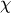
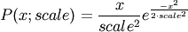

numpy.random.mtrand.RandomState.rayleigh¶
- RandomState.rayleigh(scale=1.0, size=None)¶
Draw samples from a Rayleigh distribution.
The  and Weibull distributions are generalizations of the Rayleigh.
Parameters : scale : scalar
Scale, also equals the mode. Should be >= 0.
size : int or tuple of ints, optional
Shape of the output. Default is None, in which case a single value is returned.
Notes
The probability density function for the Rayleigh distribution is

The Rayleigh distribution arises if the wind speed and wind direction are both gaussian variables, then the vector wind velocity forms a Rayleigh distribution. The Rayleigh distribution is used to model the expected output from wind turbines.
References
- ..[1] Brighton Webs Ltd., Rayleigh Distribution,
- http://www.brighton-webs.co.uk/distributions/rayleigh.asp
- ..[2] Wikipedia, “Rayleigh distribution”
- http://en.wikipedia.org/wiki/Rayleigh_distribution
Examples
Draw values from the distribution and plot the histogram
>>> values = hist(np.random.rayleigh(3, 100000), bins=200, normed=True)
Wave heights tend to follow a Rayleigh distribution. If the mean wave height is 1 meter, what fraction of waves are likely to be larger than 3 meters?
>>> meanvalue = 1 >>> modevalue = np.sqrt(2 / np.pi) * meanvalue >>> s = np.random.rayleigh(modevalue, 1000000)
The percentage of waves larger than 3 meters is:
>>> 100.*sum(s>3)/1000000. 0.087300000000000003

Previous topic
numpy.random.mtrand.RandomState.random_sample
Next topic
numpy.random.mtrand.RandomState.seed